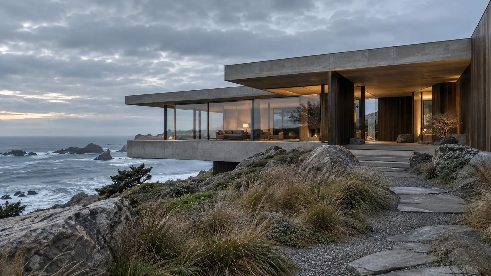

A website, from the inside out.
An idea.A world.Your website.
One idea. Carried all the way through.
Scroll once to begin01 / Find the point of view
Start withwhat matters.
A home shaped by its surroundings.
A website shaped by the same idea.
The feelingSpace. Light. Perspective.
The purposeBegin a project conversation.
02 / Build the world
Let the ideatake up space.
A clear point of view.
In every image, word and proportion.
03 / Make it belong
Different screen.Same character.
The composition changes.
The idea stays with you.